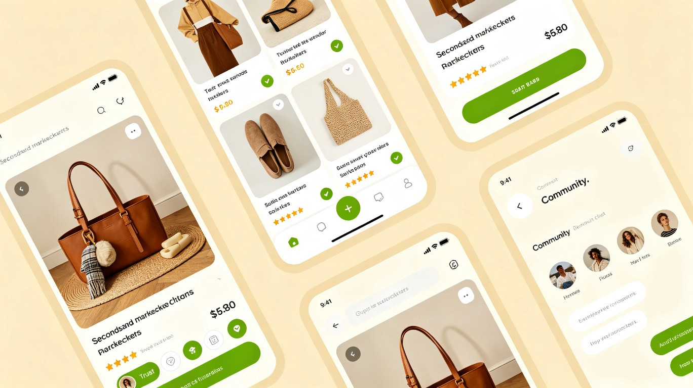
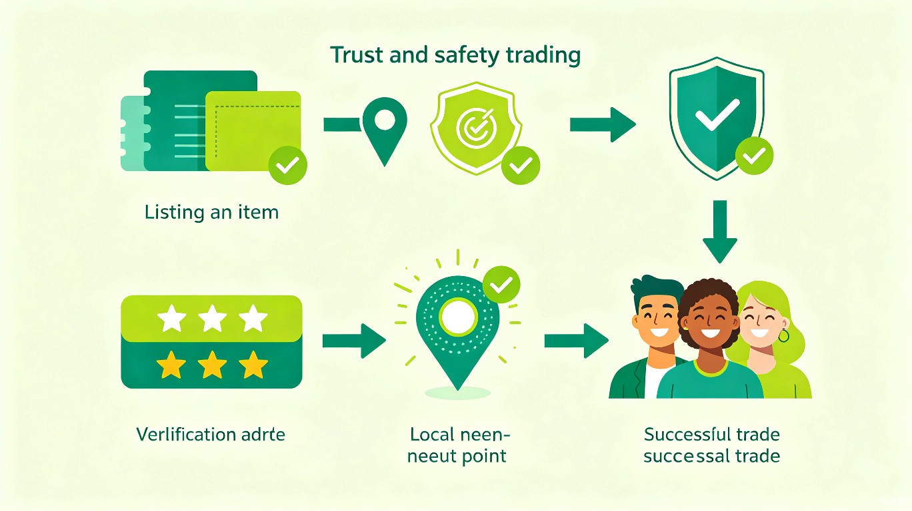

创意名称与介绍
项目名称：邻物 LinWu
邻物是一款基于社区地理围栏的二手物品交易网站， 聚焦同城小区/校园/写字楼等微观地理单元，通过实名认证、信用评分、社区担保等机制解决二手交易中的信任危机， 让闲置物品在邻里之间高效、安全地流转。
想解决什么问题？
当前二手交易平台的投诉量居高不下——2024年仅消费保平台就受理投诉超 28,584 件，涉诉金额超 4,958 万元， 其中网络欺诈占 13.88%，商品质量问题占 18.51%，闲鱼投诉解决率仅 6.46%[1]。 用户在 C2C 交易中面临严重的信任缺失和维权困难。
为什么会想到做这个？
灵感来源于真实的社区生活场景：搬家时大量闲置物品无人问津、舍友毕业季教材数码低价贱卖、 同小区邻居有需求却互不相识。主流平台（闲鱼、转转）以全国大盘为主，缺乏本地化社区信任网络； 微信群和朋友圈交易则零散无序，缺乏标准化流程和保障机制。
大概是什么产品？
一个响应式网站（同时适配手机浏览器），具备商品发布与浏览、智能推荐、 在线沟通、信用评分、社区圈层、安全支付等功能，未来可扩展为小程序。
市场背景与机会
中国二手交易市场正处于高速增长期。2024年二手电商交易规模达 6,450.2 亿元，同比增长 17.56%[2]。 然而，C2C 模式的信任困境日益凸显：转转已于 2025 年关停自由市场 C2C 业务[3]， 闲鱼投诉量占行业总投诉量的 62.83%，但解决率垫底[1]。 这意味着社区本地化+信任机制的二手交易赛道存在巨大空白。
目标用户及痛点
大学生群体
教材、数码、生活用品的低价转让需求旺盛；毕业季集中处理；缺乏安全可信的交易渠道
社区居民
家具家电、母婴用品等大件同城交易；偏好面对面验货、免物流；邻里互不相识
写字楼白领
办公设备、电子产品流转；追求高效交易；对信用保障有较高要求
环保意识群体
认同"循环经济"理念；愿意为绿色消费付出更多信任成本；关注碳减排价值
使用场景
搬家/毕业时快速处理闲置 → 邻居发布需求匹配 → 校园/社区活动集中置换 → 日常小额物品即时交易
核心痛点分析
产品设计方案
核心功能架构
flowchart TB
subgraph 用户端
A[注册/实名认证] --> B[发布闲置物品]
B --> C[浏览社区商品]
C --> D[在线沟通/议价]
D --> E[确认交易/托管支付]
E --> F[面交自提/配送]
F --> G[双向评价]
end
subgraph 平台层
H[地理围栏引擎] --> I[AI推荐系统]
J[信用评分体系] --> K[安全支付托管]
L[社区治理机制] --> M[内容审核]
end
subgraph 社区层
N[社区动态圈] --> O[置换活动]
P[邻里互助] --> Q[环保碳积分]
end
C -.-> I
G -.-> J
E -.-> K
B -.-> H
关键功能详解
地理围栏交易
基于LBS定位，默认展示用户所在社区3km范围内的闲置物品，支持按小区、校园、写字楼筛选。 从源头降低交易距离，实现"下楼即交易"。
社区信用体系
基于实名认证、交易历史、邻里评价构建多维信用评分。 信用分影响商品曝光权重和交易权限，形成良性循环。
托管支付
买家付款至平台托管账户，确认收货后自动放款给卖家。 发生争议时平台介入调解，保障双方权益。
碳积分激励
每次成功交易自动计算碳减排量并发放碳积分， 积分可兑换社区服务或平台特权，强化环保价值认同。
社区动态圈
类似社区朋友圈，用户可分享闲置故事、交换技能、组织社区置换活动， 增强邻里连接和平台粘性。
AI智能定价
基于同类物品历史成交数据和当前市场供需，智能推荐合理价格区间， 帮助卖家快速定价，买家判断性价比。
产品界面概念

信任机制设计
信任是二手交易的核心壁垒。邻物通过三层信任架构构建安全交易环境：
第一层：身份信任
强制实名认证（身份证/学生证/工牌三选一），绑定手机号，可选绑定社区住址（物业核验）。 所有用户展示认证标识，虚假信息一经发现永久封禁。
第二层：行为信任
每次交易完成后买卖双方互评，评价内容包括：物品描述准确度、沟通态度、履约准时性。 系统自动汇总为信用评分（0-1000分），并在个人主页公开展示。
第三层：社区信任
社区圈层内的"熟人效应"——同小区邻居的交易评价更具参考价值。 社区活跃度越高、交易越多，社区整体的信任指数越高，形成正向飞轮。

商业模式
增值服务费
商品置顶推广、首页精选位竞价、批量上传工具等。对个人卖家免费，对高频商家收取服务费。
交易佣金
参考闲鱼0.6%的基础费率[3]，对高价值物品（>500元）收取微量佣金， 低价物品完全免费，降低使用门槛。
社区合作
与物业、高校、写字楼管理处合作，提供社区专属置换活动、回收服务等B端解决方案。
竞品对比分析
| 维度 | 闲鱼 | 转转 | 邻物 LinWu |
|---|---|---|---|
| 定位 | 全国性C2C大平台 | C2B2C品质验机 | 社区本地化C2C |
| 月活用户 | 2.09亿 | 3,588万 | 新进入者 |
| 信任机制 | 芝麻信用授权 | 官方验机质检 | 实名+社区信用+托管 |
| 交易范围 | 全国 | 全国 | 同城3km社区圈 |
| 物流 | 依赖快递 | 依赖快递+门店 | 面交为主，零物流 |
| 投诉解决率 | 6.46% | 94.76% | 社区快速响应机制 |
| 社区属性 | 弱（鱼塘已弱化） | 无 | 强（核心壁垒） |
邻物并非与闲鱼正面竞争，而是切入其覆盖不足的本地化社区信任交易细分市场。 闲鱼的"鱼塘"社区功能曾尝试本地化但因缺乏系统信任机制而弱化， 转转干脆放弃C2C转向B端质检——这恰恰证明了社区C2C信任交易的巨大机会。
价值与意义
商业价值
精准切入6000亿+二手交易市场中"社区本地化"这一空白细分赛道。 通过地理围栏+信任机制构建差异化竞争壁垒，先从高校和大型住宅社区冷启动， 逐步扩展到城市级社区网络。平台网络效应显著——社区用户越多，匹配效率越高， 形成自然增长飞轮。
社会价值
促进闲置资源循环利用，响应国家"双碳"战略。每一次二手交易都是一次碳减排行动。 同时重建社区邻里关系——在城市化进程中，社区邻里疏离感日益加重， 邻物通过物品交易重建人与人之间的连接，打造有温度的数字社区。
发展路线图
timeline
title 邻物发展路线图
section 第一阶段（1-3个月）
MVP上线 : 核心发布/浏览/沟通功能
高校试点 : 与3-5所高校合作冷启动
信任基石 : 实名认证+评价系统
section 第二阶段（3-6个月）
社区扩展 : 覆盖10个重点城市社区
碳积分体系 : 上线碳减排追踪
托管支付 : 接入安全支付通道
section 第三阶段（6-12个月）
小程序上线 : 微信生态快速裂变
B端合作 : 物业/高校/写字楼合作
AI推荐 : 智能匹配与定价系统
总结
邻物瞄准二手交易市场中最被忽视却最有价值的细分领域——社区本地化信任交易。 在6000亿级市场高速增长、C2C信任危机日益加剧的背景下， 我们以地理围栏为骨架、社区信用为血脉、碳积分为灵魂，构建一个有温度、有保障、有意义的二手交易生态。
我们相信，最好的二手交易不是跨越千里的快递包裹，而是下楼三分钟的面交问候。 邻物，让闲置找到新家，让邻里重拾信任。